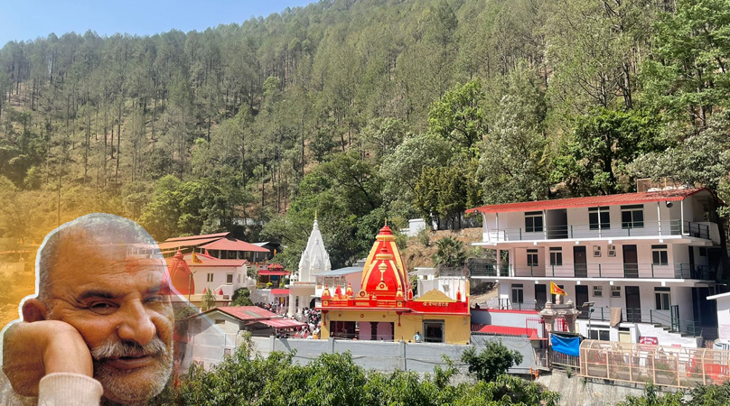

A Barefoot Promise at Kainchi Dham

Kainchi Dham, Uttarakhand
It began not with a plan but with a question that had no answer.
On September 18 2026, Shravan left barefoot from Hyderabad, alone, at 4 AM, carrying food that Swetta had woken up at 2 AM to cook without knowing why. Ghee Pongal and Soya curry, no onion, no garlic, packed with the kind of care that only a wife who trusts her husband's instinct can offer.
A cab driver named Vimal, without being asked, suggested stopping at Bhumiyandhar temple first, then Kainchi Dham. The food was offered to Baba and 11 devotees outside the temple received the bhog carried all the way from Hyderabad. That evening when returning for darshan, the security guard remembered and said the food was really tasty.
That same evening, Tripathi Ji known as Dada heard the story. He had not eaten and felt that was not a coincidence; Baba wanted this cooked again. He picked up his phone and called Kundan, the owner of Hotel Anupam, telling him a devotee needed a dish cooked. Kundan was puzzled, the temple cooks its own food inside, so why was he being asked? He sat with that confusion for a moment and then felt it, this was Baba's doing, and he agreed.
That Sunday evening, Swetta called Prakash, the chef at Hotel Anupam, from Hyderabad. She shared the recipe over the phone, explained every step, and made sure he understood exactly what sattvic meant in this kitchen, no onion, no garlic, nothing that would dilute the offering.
On the morning of September 21, during darshan, a panditji mentioned that bhog is offered to Baba at noon. The call to Prakash went out immediately, could the food be ready by 11:45? Yes, he said, and it was.
Those bowls went back to Hotel Anupam, mixed into the big vessels, and with Rohit and Vijay standing alongside without being asked, more than 75 devotees were fed. Prakash refused payment; Kundan asked only ₹500 for gas. Every ingredient had come from Milan Stores in Garam Pani.
None of it was planned, not Dada, not Kundan's confusion that became faith, not the noon timing, not Rajan Panditji standing exactly where he needed to be on exactly that day, not Prakash delivering on time, not the marigolds coming back in the bowls.
And to this day, there is no explanation for why the food needed to be cooked at home and carried from Hyderabad in the first place, why Swetta woke at 2 AM and said yes without a second thought, or why every door opened exactly when it needed to.
राम SITA राम was born from that moment, not as a business, but as a recognition that something larger had already decided what this would become.